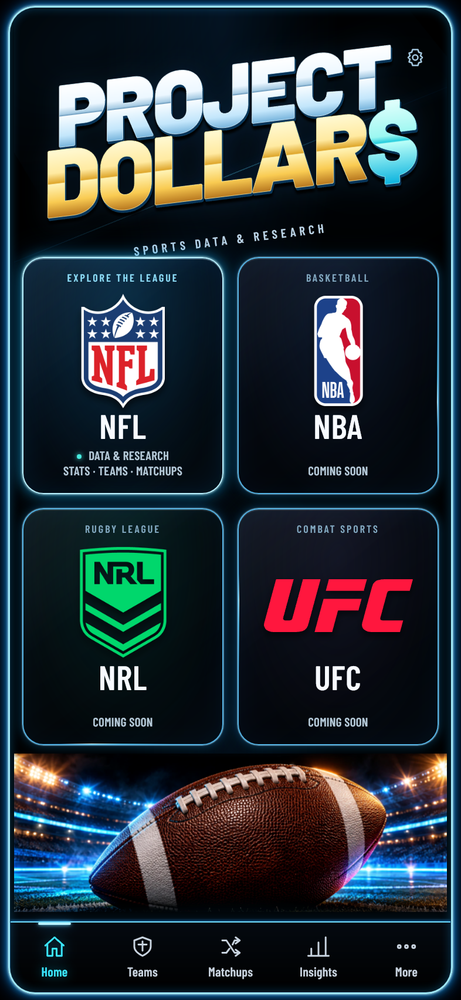
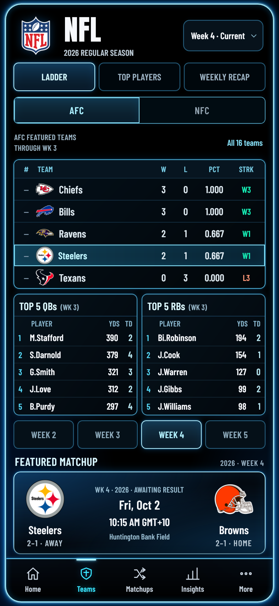
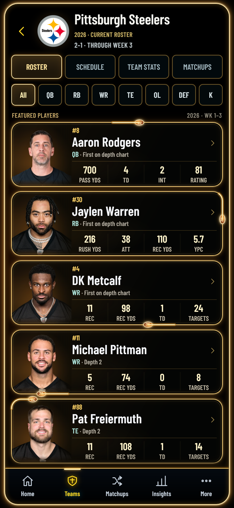
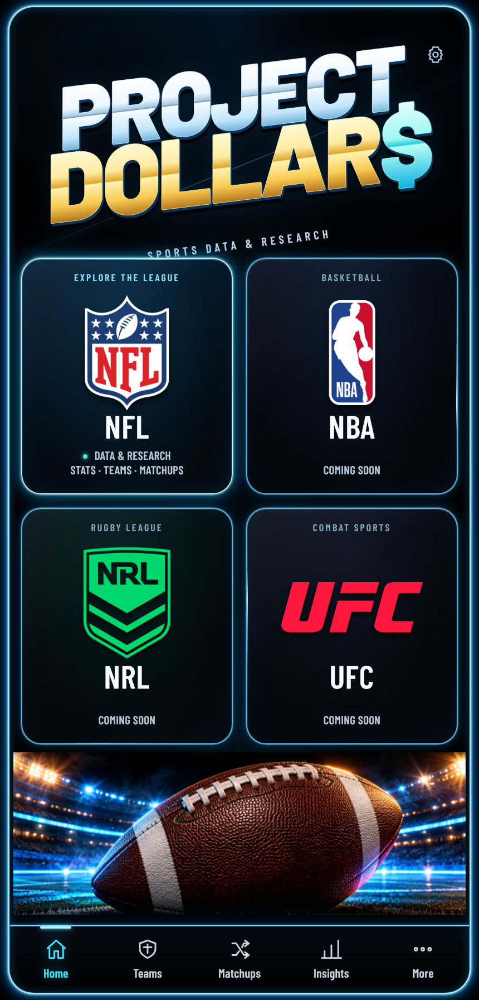
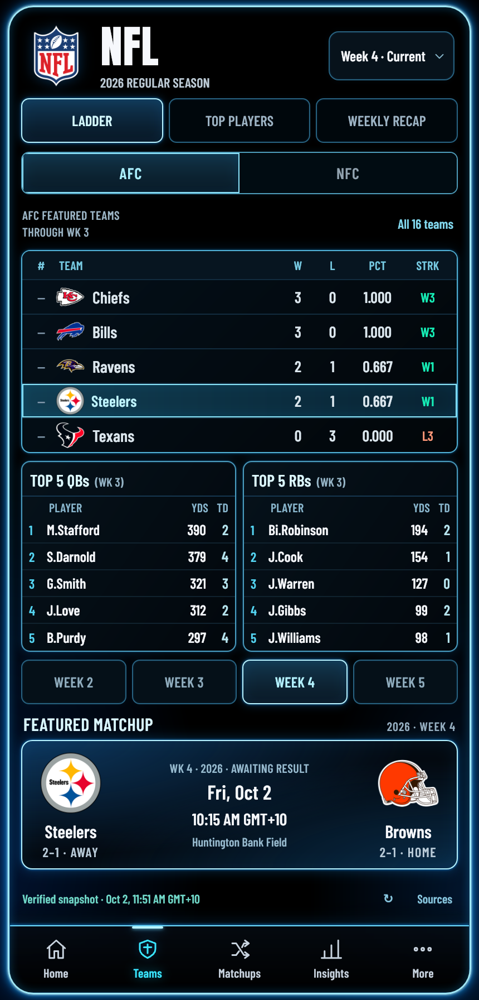
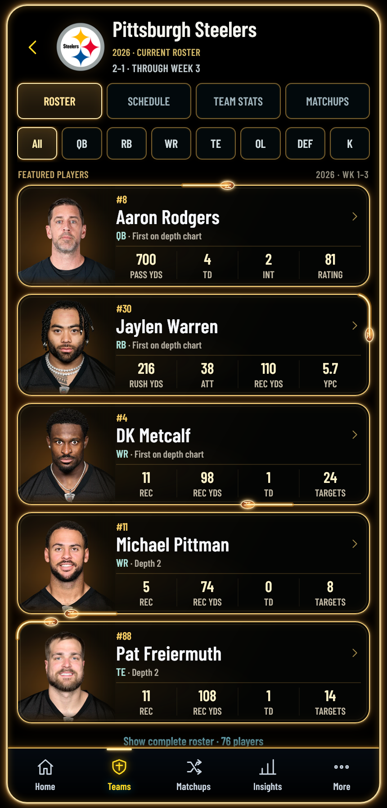

Actual hosted WebKit 26 screenshots at 2× device scale. Top: 393 × 852. Bottom: 430 × 896. Genuine hosted browser output after release a301293, with strict TLS. These are not reconstructed reference artwork.





